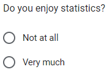
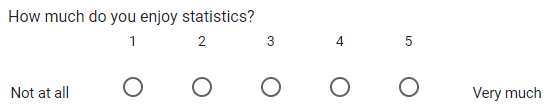
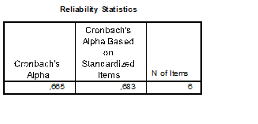
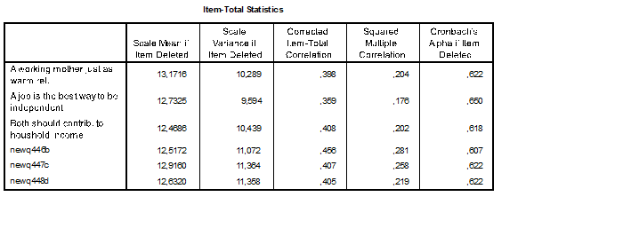
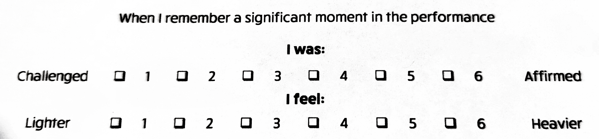
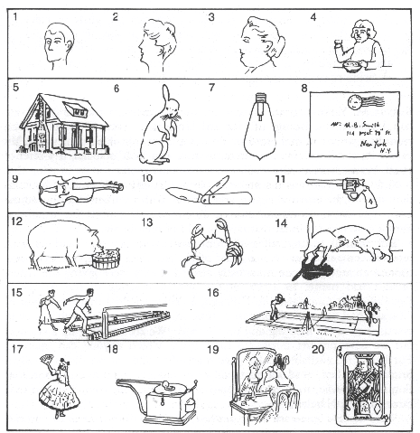

Psychometrics I: Reliability
2023-09-12
Questionnaires
What is a questionnaire?
A written set of questions that are given to people in order to collect facts or opinions about something
- Widely used in the social sciences
- Questionnaires can measure…
- … self-reported behavior
- How often did you visit the gym in the past 7 days?
- … beliefs
- Do you think going to the gym is healthy?
- … knowledge
- How many calories are burned during a 30 minute jog?
- … opinions/values/attitudes
- Do you think the average person should go to the gym more?
- … attributes/characteristics
- What is your body weight?
- … self-reported behavior
Response options
Binary ordinal

Likert scale (ordinal)

Visual Analog Scale (continuous, interval?)

Measurement level
Remember: Measurement level determines what kind of information a variable conveys
- Are opinions, values, dispositions interval or ratio variables?
- Unknown measurement level
- If we use a continuous scale, can we assume an interval or ratio measurement level?
Counterexample
This is a ratio variable, measured with a Likert scale
- The resulting variable has 5 levels - but should we treat it as ordinal or ratio?
Assuming Measurement Level
In practice, you will often assume a particular measurement level
- Be aware of this assumption
- Violating the assumption may bias your results
- Reflect on this assumption in your Discussion
Recap: Constructs
Recall from Lecture 1:
Construct:
- Abstract feature of interest for the population
- E.g., Short Term Memory, intelligence, perseverance, education
Operational definition:
- Concrete measurable representation of the construct
- E.g., Number of words recalled, the Wechsler Adult Intelligence Scale (WAIS), ability to withstand a tasty treat, highest degree obtained
Observed vs Latent Constructs
Observed constructs are those that can be measured directly
- Height, weight, age, number of visits to the gym
- If you ask people about them in questionnaires, there will be some measurement error
- I would argue it is still reasonable to assume that is is observed
Latent constructs can only be measured indirectly
- Attitudes, beliefs, opinions
- Short Term Memory, intelligence, perseverance, education
Latent Constructs in Social Science
Social science often uses latent constructs
- E.g.: Extravert people make successful managers .
You could use an observed variable to operationalize “successful manager”, e.g., income, number of positive reviews
But how do you measure the personality trait “extraversion”?
Indicators
We use observed indicators of the unobserved latent construct
Extraverted people…
- probably have more friends
- probably go out more often
- probably enjoy sky diving more and knitting less
Together, several observed indicators help us capture the underlying latent construct
Classical test theory
Observed test scores are a function of their true score plus measurement error
\[ X_{obs} = T + \epsilon \]
- This is a theoretical model
- We don’t know the exact impact of the measurement error
Measurement error
- If you drive 103 km/h on a 100 km/h road, you will not get a ticket
- Because measurement error is assumed to be greater than 3 km/h
- The law is assuming that your measured speed (103 km/h) is a function of your true speed plus measurement error (assumed to be 3 km/h)
- So a speed of 103 km/h is within measurement error of the limit of 100 km/h
Measurement error
- Many factors influence measurement error
- Including the properties of the instrument
- For example, if I measure people’s height, measurement error will include:
- Posture (slouching vs stretching)
- Possibly, whether people wear shoes or not
- But also the instrument I use
- Markings on the doorpost
- Tailor’s tape measure that I have to hold up next to the person
- Dedicated wall-mounted measurement device that comes down on peron’s head
Applied to latent constructs
- My “true score” on extraversion is high
- Question: “I enjoy talking with people”
- Affected by random factors
- After a sleepless night, my score is lower
- Difference between “true score” and lower response is measurement error
- Affected by questionnaire
- If my extraversion is mostly reflected by gregariousness, but the questionnaire focuses on assertiveness, my extraversion will be underestimated
Item to Scale
Sum scores
\(X_{sum} = \sum_{i=1}^k X_i\)
| Question | 1 Disagree | 2 Neutral | 3 Agree |
|---|---|---|---|
| Statistics are really cool | X | ||
| I find statistics books boring | X | ||
| SPSS makes me happy | X | ||
| Studying statistics makes me happy | X |
Sum score: \(3 + 1 + 1 + 3 = 8\)?
Contra-indicative items
- Statements whose wording is aligned with the construct are indicative
- Statement whose wording is opposed to the construct are contra-indicative
- Or: reverse-coded
| Question | 1 Disagree | 2 Neutral | 3 Agree |
|---|---|---|---|
| Statistics are really cool | X | ||
| I find statistics books boring | X | ||
| SPSS makes me happy | X | ||
| Studying statistics makes me happy | X |
Sum score: \(3 +\) 3 \(+ 1 + 3 = 10\)?
Reverse coding
For a contra-indicative item \(X\) with \(k\) response categories
The reverse-coded item is \(X_r = (k+1)-X\)
Limitations of sum scores
- Value depends on number of items
- Missing values result in a lower score
- Each item is considered to be equally important
- Measurement error is ignored, becomes part of the sum score
Mean scores
\(X_{mean} = \frac{\sum_{i=1}^k X_i}{k}\)
- Value does not depend on number of items
- Range of scale same as range of items
- Missing values do not result in a lower score
- Each item is still considered to be equally important
- Measurement error is still ignored
Reliability and Validity
Reliability and Validity
- Reliability is a necessary condition for validity
- Unreliable measures cannot be valid
- Reliable measures may or may not be valid

Defining Reliability
Reliability: Does the instrument consistently measure the same thing?
- Related to test theory: is the measurement error \(\epsilon\) small relative to the true-score variance?
- Test-retest reliability: Are individuals’ scores similar across multiple occasions?
- Is your score on extraversion still ~the same in a month?
- Internal consistency: Are scores across different questions similar for the same individual?
- If you score high on “I like parties”, do you also score high on “I enjoy going out”?
- Inter-rater reliability: Do different people report the same score for the same thing?
- We ask two classmates to rate your extraversion on a scale of 1-10.
Estimating Reliability
Reliability coefficients
We estimate reliability as the association between repeated assessments of the test
- Test-retest: Between repeated administrations of the test
- Internal consistency: Between items of the same test
- Inter-rater: Between raters of the construct of interest
These are correlation coefficients, and their values should be positive
Test-retest reliability
- Administer same test to same participants twice
- Compute correlation between their repeated scores, \(r_{X_{t1},X_{t2}}\)
- Useful for stable traits (like personality)
Limitations:
- Learning effects
- Memory effects
- Change over time
- So you have to find an interval that is just long enough for partcipants to be minimally affected by learning and memory, but short enough for minimal change to occur
Internal consistency: Split halves
Internal consistency refers to the “association” among items within the test
- Split the test in two halves
- Correlate scores of first half with second half, \(r_{X_{\frac{1}{2}},X_{\frac{2}{2}}}\)
- Apply correction to estimate reliability of entire test based on correlation between split halves
- \(r' = \frac{2r}{1-r}\)
Internal consistency: Alpha
Cronbach’s alpha estimates internal consistency:
\[ \alpha = \frac{k*\bar{C}}{\bar{V} + (k-1) * \bar{C}} \]
Where:
- \(k\) = number of items
- \(\bar{C}\) = average covariance between items
- \(\bar{V}\) = average variance of items
Note that contra-indicative items must be reverse coded!
Cronbach’s alpha properties
\[ \alpha = \frac{k*\bar{C}}{\bar{V} + (k-1) * \bar{C}} \]
- High alpha: the average covariance is high relative to the average item variance
- Relationships between items account for most of the item variability
- Taking the average (co)variance means that each item is assumed to be exactly equally relevant
- This may often not be true!!!
- Alpha increases when items are more similar
- But this might lower content validity
- Alpha increases with number of items
- Is it coincidence that old scales are often 30+ items long?
Is the scale reliable?
Rules of thumb
| Alpha | Interpretation |
|---|---|
| > .90 | Excellent |
| > .80 | Good |
| > .70 | Acceptable |
| > .60 | Questionable |
| > .50 | Poor |
| < .50 | unacceptable |
Item-total correlation
We could compute a total scale score by adding or averaging item responses
- Each item ought to measure the same construct as this total score
- We can observe the correlation between each item and the total score
- We must exclude this item from the total
- Otherwise the correlation will be artificially higher because you correlate the item with itself
- Called “corrected” item-total correlation
- We should find similar item-total correlations for all items if each item is indeed equally diagnostic
- We should find high item-total correlations if the scale is reliable
- If there is a low correlation (e.g., < .30) between an item and the total scale score, this could indicate a problem with the item
Alpha if item deleted
- What would the scale’s alpha value be if we removed this item?
- Ideally, alpha should remain the same or decrease if we remove items
- If Cronbach’s alpha increases substantially (e.g., .1), this might be an indication of a problem with the item
Example
Questionable reliability
Example ctd.
But all item-total correlations are similar in size
- Around .4
And alpha decreases if any item is deleted
When to drop items?
Should we use item-total correlation and alpha if item deleted to remove items from the scale?
- During scale development, yes
- But also consider content validity! Removing an item might mean you no longer measure a particular aspect of the construct
- For validated scales: maybe not; you lose comparability to previous studies
Validity
Defining Validity
Validity: Does the instrument measure what it intends to measure?
- Related to test theory: are we measuring the true score \(T\)?
- Face validity: At first glance, does the instrument appear to assess the correct construct?
- Is “I enjoy swimming” a face valid indicator of extraversion?
- Content validity: Does the test cover all aspects of the construct?
- Not just the gregariousness-aspect of extraversion, but also the assertiveness
- Criterion validity: Is the test associated with outcomes or indicators of the construct it is designed to measure?
- Test of extraversion should predict number of friends
Face validity
- Are the items clearly related to the construct of interest?
- Is the wording clear, readable, understandable, unambiguous?
- I enjoy going to parties
- I enjoy going to parties and talking to people there (if you are thinking of dance parties, there may not be much opportunity to talk)
- Are the answer categories clearly labeled, consistent, unambiguous?
Example: face validity content
- What is “a significant moment in the performance”?
- Every participant is thinking of a different moment
- Could be significant for any number of reasons
- What construct does the question “I was” measure? Same for “I feel”?
- Is lighter a feeling? Is heavier a feeling?
Example: face validity design
- Are “challenged” and “affirmed” antonyms?
- The apparent middle point of the scale is actually above average (4/6)
- What should people answer who felt neither challenged nor affirmed? There is no neutral middle
- Meaning of scale labels is reversed between the two questions
- Challenged and heavier seem to carry similar meaning but are on opposite sides
Content validity
Typically involves panels of experts who:
- Define full scope of the construct and its subdomains
- Generate items for each subdomain of the construct
- Rate the relevance of the items
Example of poor content validity
Early intelligence tests
- Warning: This is going to be deeply offensive
- But it is important to acknowledge the racist roots of intelligene testing
- 1917, US army tested 1.750.000 men
- White Americans scored highest, followed by white immigrants, followed by African Americans
- 89 percent of African Americans were classified as “morons” (quote)
- Conclusion:
[These results] are now definitely known, to measure native intellectual ability. They are to some extent influenced by educational acquirement, but in the main the soldier’s inborn intelligence […] determines his mental rating
See Rury, 1988 https://doi.org/10.2307/2295276
Example: Racism and Intelligence
Low content validity
Results like these were used to justify racism, but low content validity calls them into question
- All items have a strong cultural component
- I don’t even know what games these people are playing, or what component of the gun or record player (?) is missing
- During the height of segregation
- Widespread institutional racism excluded black folk from white institutions, neighborhoods, cultural activities, and education
Criterion validity
Scale correlates with…
- Another validated scale
- E.g., short personality scale correlates with NEO-PI-R validated scale
- A behavioral measure of the construct
- Intelligence test correlates with grade point average
- An outcome of the construct
- A measure of altruism correlates with giving to charity